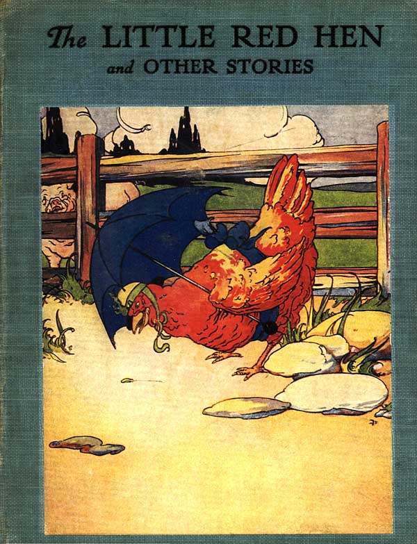
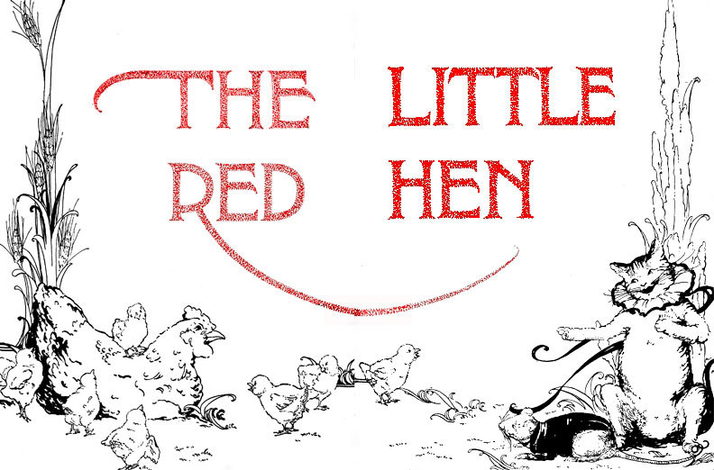
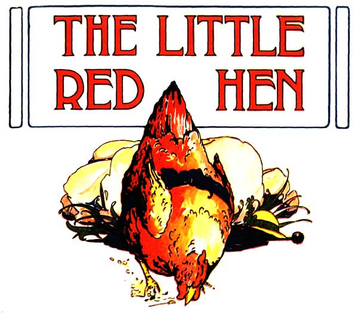
An Old English Folk Tale
Retold and Illustrated
The
Saalfield Publishing Company
Chicago - Akron, Ohio - New York
PRINTED IN U. S. A.
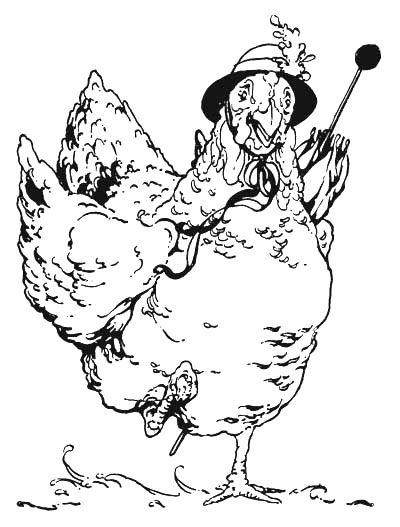
COPYRIGHT, 1918
BY
THE SAALFIELD PUBLISHING COMPANY
Little Red Hen lived in a
barnyard. She spent almost all of
her time walking about the barnyard
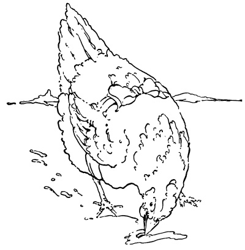
in
her
picketty-pecketty
fashion,
scratching
everywhere
for
worms.
he dearly loved fat, delicious worms
and felt they were absolutely necessary
to the health of her children. As
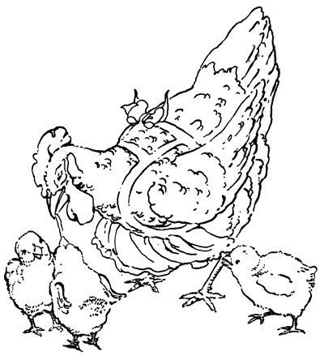
often as
she
found a
worm
she
would
call
“Chuck-chuck-chuck!” to her chickies.
hen they were gathered about
her, she would distribute choice
morsels of her tid-bit. A busy
little body was she!
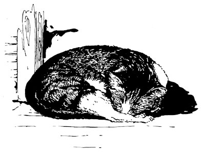
A cat usually napped lazily in the barn door, not even bothering herself to scare the rat who ran here and there as
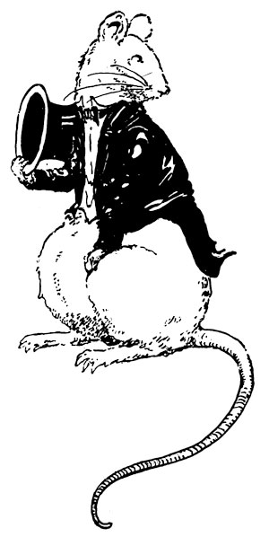
he pleased.
And
as for
the pig
who lived
in the
sty—he
did
not care what
happened so long as he could eat and grow fat.
ne day the Little Red Hen found a
Seed. It was a Wheat Seed, but the
Little Red Hen was so accustomed to bugs
and worms that she supposed this to be some
new and perhaps very delicious kind of meat.
She bit it gently and found that it resembled
a worm in no way whatsoever as to taste
although because it was long and
slender, a Little Red Hen might easily
be fooled by its appearance.
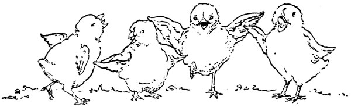
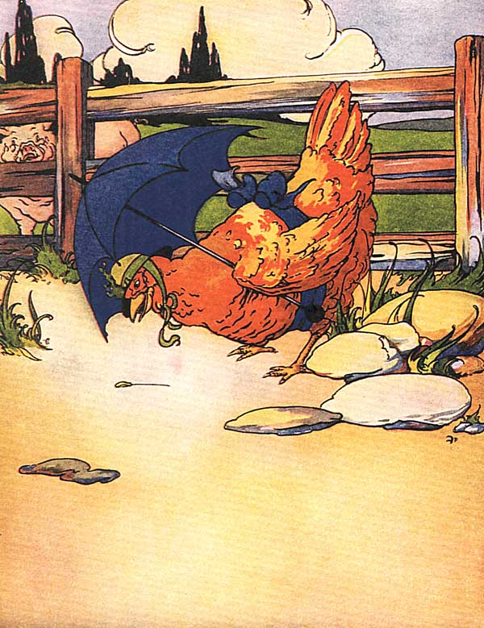
arrying it about, she made
many inquiries as to what it might
be. She found it was a Wheat
Seed and that, if planted,
it would grow up
and when ripe it could
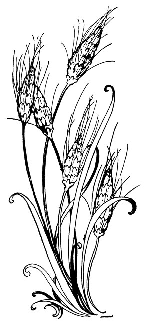
be made into flour and then into bread.When she discovered
that, she knew it ought
to be planted. She was
so busy hunting food for
herself and her family
that, naturally, she
thought she ought not
to take time to plant it.
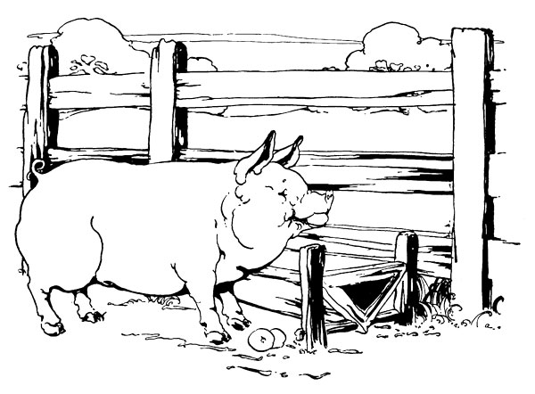
o she thought of the Pig—upon whom
time must hang heavily and of the
Cat who had nothing to do, and of
the great fat Rat with his idle hours, and she
called loudly:
“Who
will
plant
the
Seed?”
But the Pig said, “Not I,”
and the Cat said, “Not I,”
and the Rat said, “Not I.”
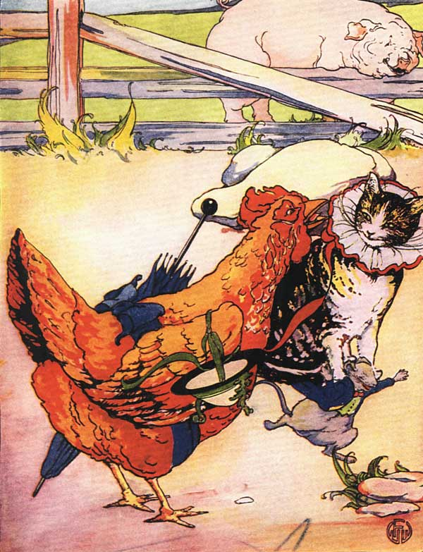
“Well, then,” said the Little Red Hen, “I will.”
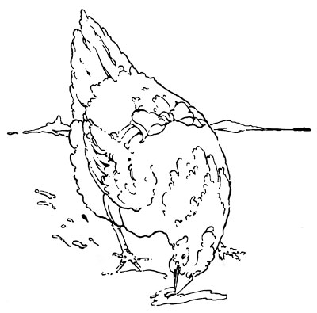
And she did.
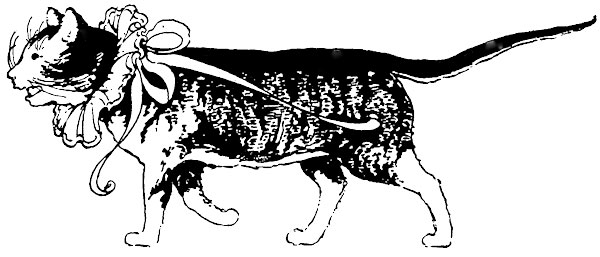
hen she went on with her daily
duties through the long summer
days, scratching for worms and
feeding her chicks, while
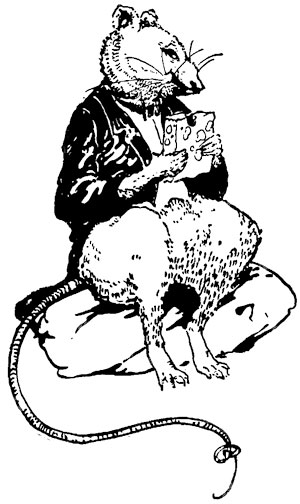
the Pig grew fat,and the Cat grew fat,
and the Rat grew fat,
and the Wheat
grew tall and
ready for
harvest.
o one day the Little Red Hen chanced
to notice how large the Wheat was
and that the grain was ripe, so she
ran about calling briskly: “Who will cut the
Wheat?”
The Pig said, “Not I,”
the Cat said, “Not I,”
and the Rat said, “Not I.”
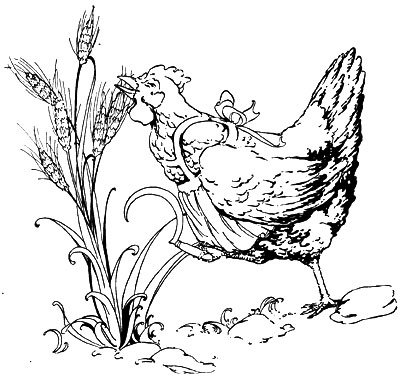
“Well,
then,”
said the
Little
Red Hen,
“I will.”
And she did.
he got the sickle from among the
farmer's tools in the barn and proceeded
to cut off all of the big plant
of Wheat.
On the ground lay the nicely cut Wheat, ready to be gathered and threshed, but the newest and yellowest and downiest of Mrs.
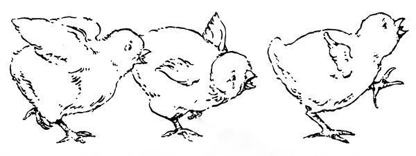
Hen's chicks set up a “peep-peep-peeping” in their most vigorous fashion, proclaiming to the world at large, but most particularly to their mother, that she was neglecting them.
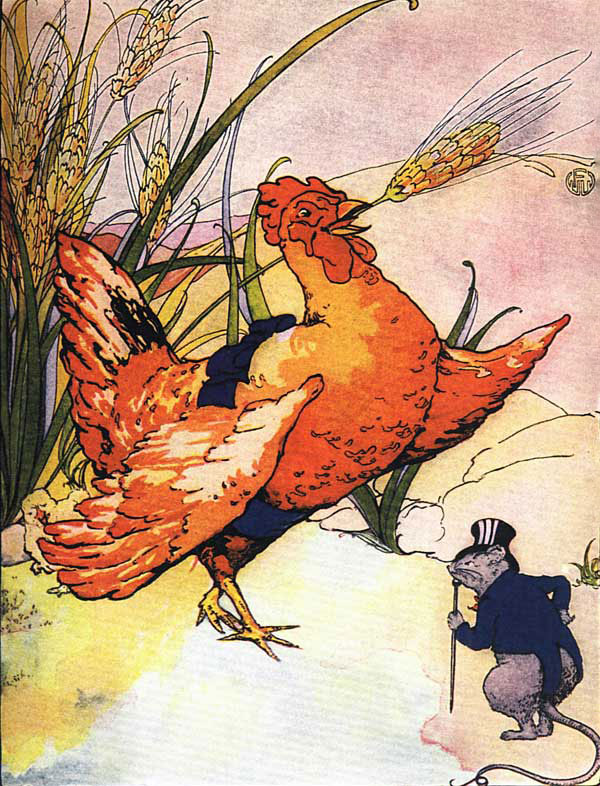
oor Little Red Hen! She felt quite
bewildered and hardly knew where to
turn.
Her attention was sorely divided between her duty to her children and her duty to the Wheat, for which she felt responsible.
So, again, in a very hopeful tone, she called out, “Who will thresh the Wheat?”
But the Pig, with a grunt, said, “Not I,” and the Cat, with a meow, said, “Not I,” and the Rat, with a squeak, said, “Not I.”
So the Little Red Hen, looking, it must be admitted, rather discouraged, said, “Well, I will, then.”
And she did.
Of course, she had to feed her babies first, though, and when she had gotten them all to sleep for their afternoon nap, she
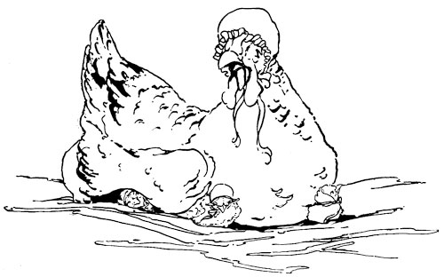
went out and threshed the Wheat. Then she called out: “Who will carry the Wheat to the mill to be ground?”
Turning their backs with snippy glee, that Pig said, “Not I,”
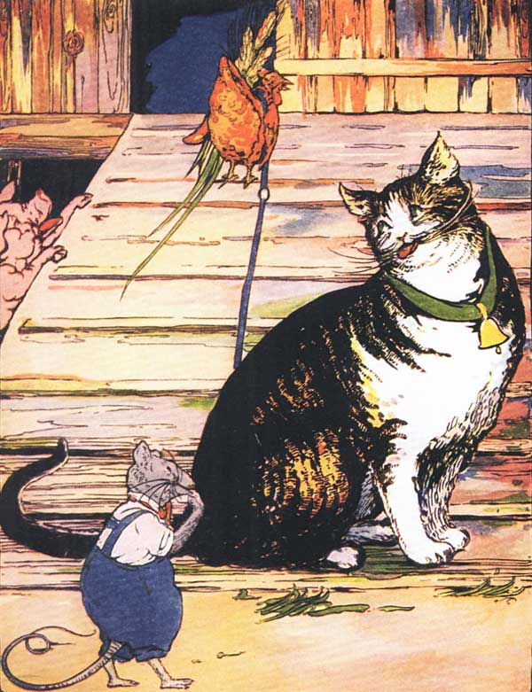
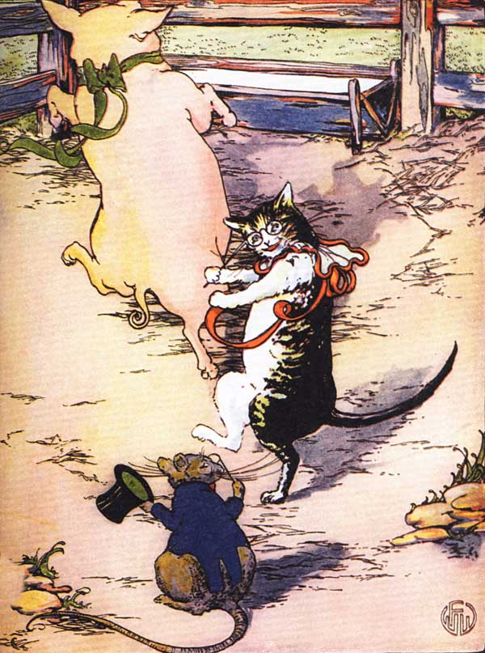
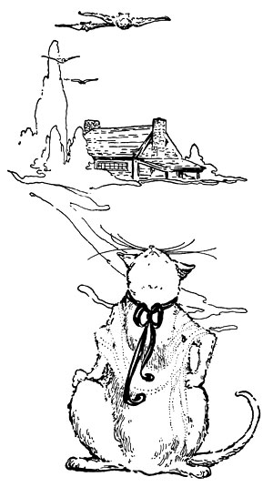
and
that
Cat
said,
“Not I,”
and
that
Rat
said,
“Not I.”
o the good Little Red Hen could
do nothing but say, “I will then.”
And she did.
Carrying the sack of Wheat, she trudged off to the distant mill. There she ordered the Wheat ground into beautiful white flour. When the miller brought her the
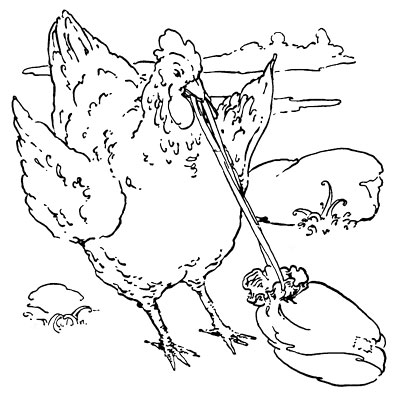
flour she
walked
slowly
back all
the way
to her own
barnyard
in her own
picketty-pecketty
fashion.
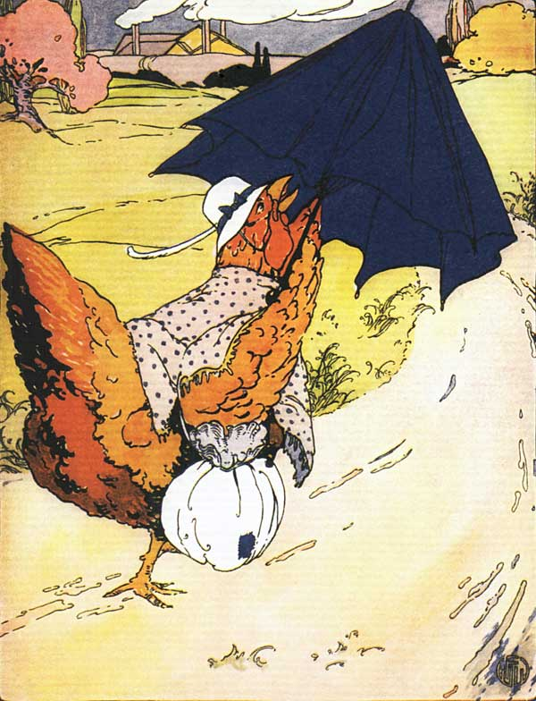
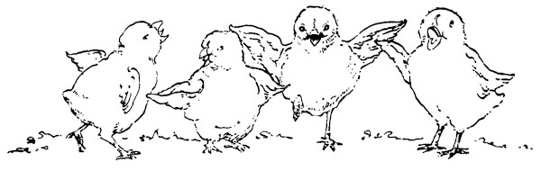
he even managed, in spite of her load,
to catch a nice juicy worm now and
then and had one left for the babies
when she reached them. Those cunning
little fluff-balls were so glad to see their
mother. For the first time, they really
appreciated her.
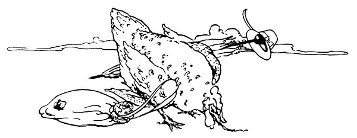
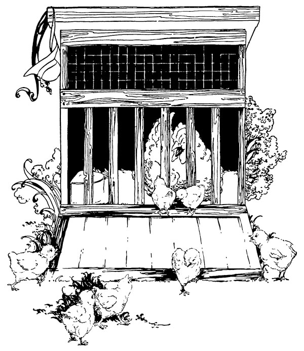
After this really strenuous day Mrs. Hen retired to her slumbers earlier than usual—indeed, before the colors came into the sky to herald the setting of the sun, her usual bedtime hour.
She would have liked to sleep late in the morning, but her chicks, joining in the morning chorus of the hen yard, drove away all hopes of such a luxury.
Even as she sleepily half opened one eye, the thought came to her that to-day that Wheat must, somehow, be made into bread.
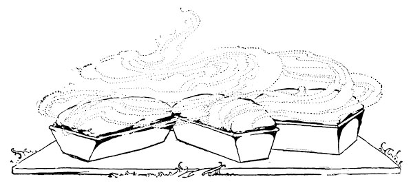
She was not in the habit of making bread, although, of course, anyone can make it if he or she follows the recipe with care, and she knew perfectly well that she could do it if necessary.
So after her children were fed and made sweet and fresh for the day, she hunted up the Pig, the Cat and the Rat.
Still confident that they would
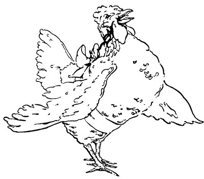
surely help
her some day
she sang out,
“Who will
make the
bread?”
las for the Little Red Hen! Once
more her hopes were dashed! For
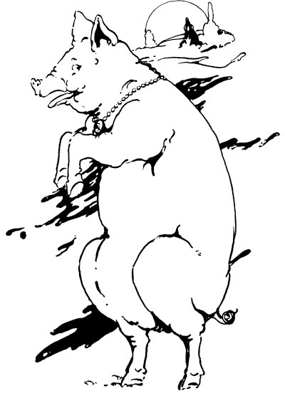
the
Pig
said,
“Not
I,”
the
Cat
said,
“Not
I,”
and
the
Rat
said,
“Not
I.”
o the Little Red Hen said once
more, “I will then,” and she did.
Feeling that she might have known all the time that she would have to do it all herself, she went and put on a fresh apron and spotless cook's cap. First of all she set the dough, as was proper. When it was time she brought out the moulding board and the baking tins, moulded the bread, divided it into loaves, and put them into the oven to bake. All the while the Cat sat lazily by, giggling and chuckling.
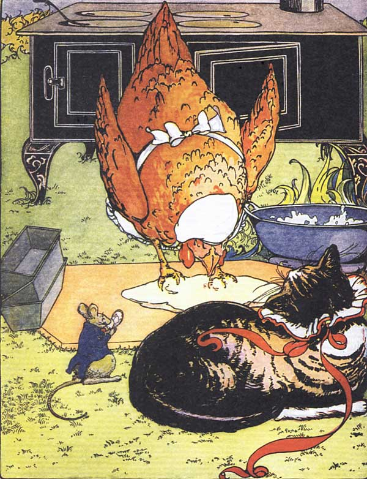
And close at
hand the
vain Rat
powdered
his nose
and admired
himself
in a mirror.
In the distance
could be
heard the long-drawn
snores of
the dozing Pig.
t last the great moment arrived. A delicious odor was wafted upon the autumn breeze. Everywhere the barnyard citizens sniffed the air with delight.
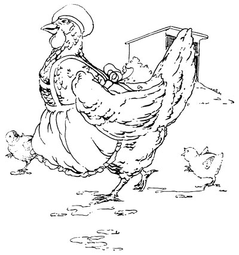
The Red Hen ambled in her picketty-pecketty way toward the source of all this excitement.
lthough she appeared to be
perfectly calm, in reality she could
only with difficulty restrain an
impulse to dance and sing, for had she not
done
all
the
work
on
this
wonderful
bread?
mall wonder that she was the
most excited person in the barnyard!
She did not know whether the bread would be fit to eat, but—joy of joys!—when the lovely brown loaves came out of the oven,
they were done to perfection.
Then, probably because she had acquired the habit, the Red Hen called:
“Who
will
eat
the
Bread?”
All the animals in the barnyard were watching hungrily and smacking their lips in anticipation, and
the Pig said, “I will,”
the Cat said, “I will,”
the Rat said, “I will.”
But the Little Red Hen said,
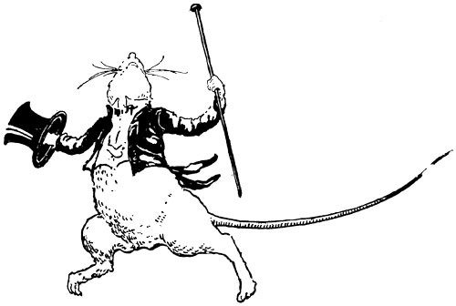
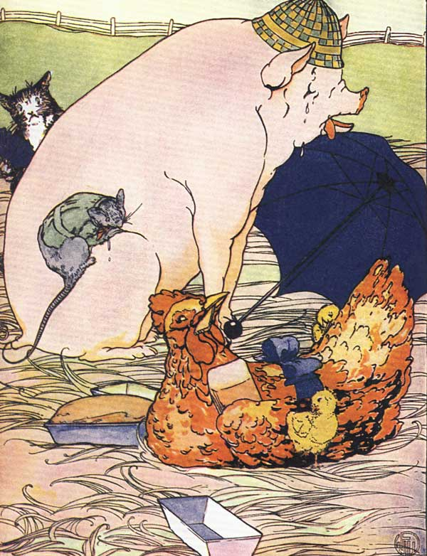
“No, you won't. I will.”
And
she
did.
Uniform With This Volume:
Little Black Sambo
Willie Mouse
Wee Peter Pug